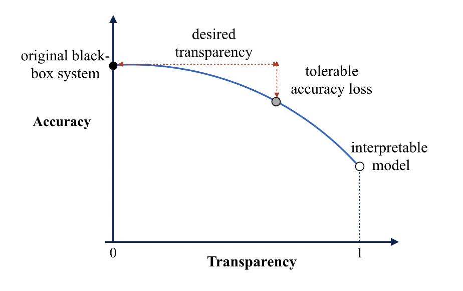
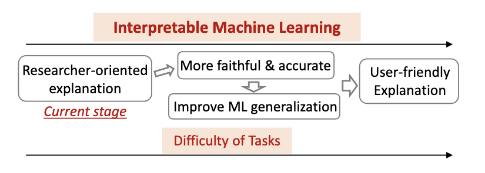
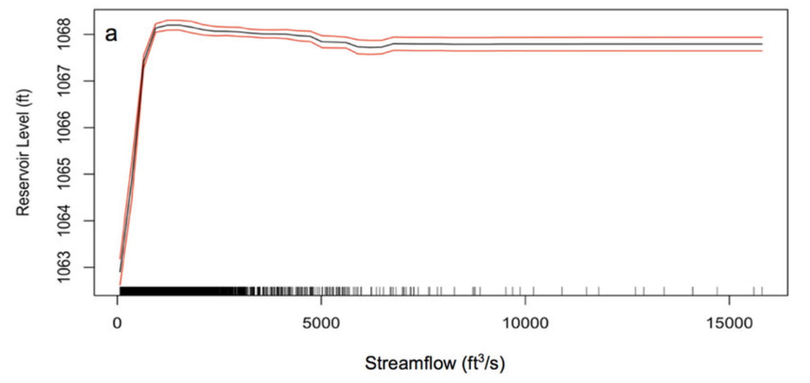
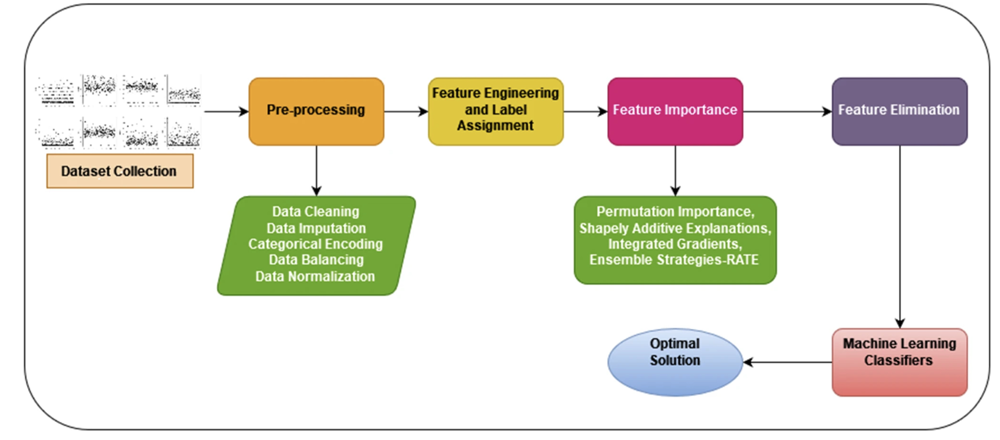
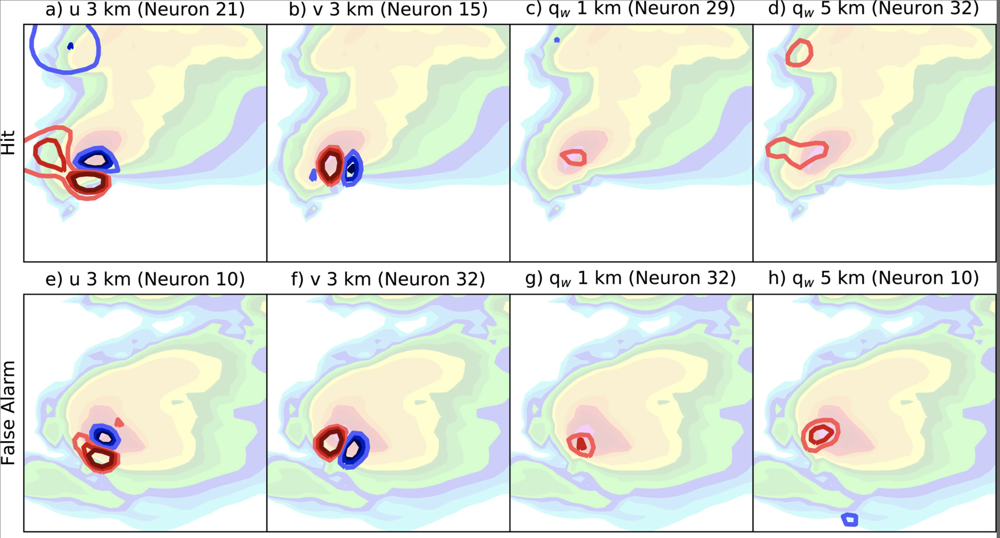

8.1. Explainable AI (XAI)#
8.1.1. Learning objectives:#
Understand the importance of XAI
Distinguish local from global explanation methods
Distinguish model-agnostic from model-specific methods
Know how to implement permutation feature importance and partial dependence plots
Apprehend explanation methods for neural networks.
This chapter concerns the steps we can take to make ML model more interpretable or explainable, and introduce some tools we can use to extract physical understanding from data.
Broadly speaking, a ML model that is interpretable means that human decision makers understand the cause of a decision and can anticipate the model’s predictions. The simplest interpretable model is a simple multiple linear regression (MLR) model.
8.1.2. 1. When do we need ML models to be explainable?#
‘Interpretability is the degree to which a human can understand the cause of a decision’ (Miller, 2017)
The first question we need to ask ourselves is “do we really need a model to the interpretable?” This question stems from the trade-offs between predictive accuracy and model interpretability. A MLR model is often less accurate than complex neural networks for complex problems. Neural networks are too complex to be directly interpretable, however.
There is a trade-off between the interpretability of a model and its predictive skill. This trade-off can be visualized with an transparency-accuracy plot (Figure 3 in Wang and Lin 2021)

As shown in the above figure, choosing the optimal model depends largely on how transparent you want your model to be (desired transparency), and how large a drop in model skills are you comfortable with (tolerance accuracy loss).
Critical decision-making: The first scenario you would want a model to be interpretable is in the context of high-stakes cases. Medical settings can be one situation where the extra transparency in your models would be very helpful. Can you think of one example where this transparency is not needed?
Human Understanding: The basic role of a science pratitioner is to discover new knowledge from observations. By analyzing how machine learning models make predictions, we may get some new understanding on, e.g., what differentiates premium wines to cheap ones? It is also possible to use tools to leverage interpretability to extract knowledge embedded in machine learning models (Extract Additional Insights)
Increase trust: AI/ML techniques are relatively new to a lot of different fields, such as weather forecasting. If we can explain how the ML models work in simple terms, forecasters may trust the AL predictions more.
Debugging ML models: It is difficult to explain how a black box model makes its predictions. This can be problematic because the model may be learning the wrong things while having a good skill score. A good example often mentioned in the literature is image classification, where classification models label the images correctly only because of a common watermark.
Here are the possible benefits of using inherently interpretable ML model rather than black box models for your research task [Figure taken from Figure 4 in Du et al. (2019)]

If you are not using an intrinsically intepretable model, the normal workflow of explaining a ML model would be to train the model first, and use ad-hoc methods to explain the trained model.
8.1.3. 2. Distinguishing Local vs. Global Explanation Methods:#
Local Explanations:
Focus on explaining individual predictions or instances.
Better accuracy for specific predictions but might not represent the overall model behavior.
Examples: Counterfactual explanations, instance-based methods.
Global Explanations:
Aimed at understanding the overall model behavior.
Highlights feature importance and interactions across the entire dataset.
Examples: Feature importance rankings, aggregated insights.
Scope of Intepretability |
Discussion |
|---|---|
Algorithm Transparency |
Understanding the algorithm and how it works |
Global, Holistic Model interpretability |
Understanding on a general level how the model works |
Global Model Interpretability |
Understanding parts of the model and how it affects the results |
Local Interpretability |
Understanding and explaining the output from the input variables and how it behaved to reach that point |
8.1.4. 3. Model-Agnostic vs. Model-Specific Methods:#
Model-Agnostic Methods:
Applicable to various machine learning models.
Post hoc techniques that analyze models after training.
Examples: Permutation feature importance, SHAP (SHapley Additive exPlanations).
Model-Specific Methods:
Tailored to particular model architectures or types.
Interpretation based on specific model internals or structures.
Examples: Interpreting weights in linear models, decision tree visualization.
These AI explanation methods can be evaluated with the following criteria:
Criteria |
Discussion |
|---|---|
Expressive power |
The structure/language that the explanation method can give |
Translucency |
How much it requires to look into the machine learning model |
Algorithmic Complexity |
Computational complexity of the method |
Portability |
How many machine learning models the method can be used for |
Properties of the explanations themselves: accurate, consistent, faithful, stable, understandable, confidence, degree of representation, and importance of features, and how outliers or “novel” instances are evaluated.
8.1.5. 4. Implementing Permutation Feature Importance and Partial Dependence Plots:#
Partial Dependence Plots:
Visualizing the marginal effect of a feature on the predicted outcome.
To create these plots, we would first decide an input feature that we are interested in.
Summarizes the model predictions for different parts of the distribution of the interested input feature.
Put the statistical summary of predictions for different input feature values to a plot.
Illustrates how changes in a feature impact model predictions.
It is useful for regression tasks and classification tasks where the ML model outputs probabilities.
Useful for understanding complex feature interactions.
PDP-based Feature Importance:
The flatter a PDP is, the lesser the feature is important as opposed to having a PDP which varies a lot.
Possible to combine the information in a PDP plot into a single numerical value.
The numerical value shows how each PDP curve deviates from the average curve for all features.
One disadvantage is that PDP-based feature importance ignores feature interactions. Only features that are directly impactful are important in this analysis.
Gives only the main effect of the feature and ignores possible feature interactions. Moreover, PDP is only defined by the unique feature value.
Advantages of PDPs:
Intuitive
Clear interpretation
A causal interpretation
Disadvantages of PDPs:
Assumption of Independence
Correlated feature complicates the interpretation
Only shows 2D plots (many figures for a model with a lot of input features)
As PDP illustrates the average marginal effect, it is possible that the heterogeneous effects might stay hidden. To know these effects, the individual conditional expectation curves can be plotted instead of aggregated line.
Here is an example of using PDPs to understand how a machine learning model predicting the water level at a reservoir works [Figure 3 in Obringer and Nateghi (2018)]

Permutation Feature Importance:
Shuffling feature values to evaluate their impact on model performance.
Identifying influential features by measuring performance degradation.
Practical application in assessing feature relevance.
Makes more sense to use the test data to calculate the importance, because a feature that is important in an overfitting model can just be unhelpful noise.
Advantages of Permutation Feature Importances:
Compressed, global insight into how the model works
Clear interpretation
Accounts for all possible interactions between features
There are explanation methods that requires you to remove features and retrain models. This method does not require you to do that.
Disadvantages of Permutation Feature Importances:
Linked to the error of the model. Sometimes how predictions change with feature (linear vs. nonlinear) is what we want.
Does not work when you do not have labels (true outcomes).
Based on random shuffling. Results can be unstable.
Importance values can be misleading when there are multicollinearity (features correlate with one another).
Alternatives:
PIMP algorithm to produce p-values for the importance
Variance-based measures such as Sobol’s indices, functional ANOVA
SHAP importance
Model-specific methods such as Gini importance for random forests or standardised regression coefficients for regression models
Tying Permutation Feature Importances to Model Optimization: Permutation feature importances can be a useful tool to reduce the complexity of your model if your model has a clear overfitting problem. By setting a cutoff threshold on the feature importance to filter out unimportant input features, we can get a model that probably generalizes better to unseen data.
In the following proposed data-driven data to predict diabetes, Nirmalraj et al. (2023) applies a feature filtering mechanism based on global explanation methods to improve the data-driven model.

8.1.6. 5. Explanation Methods for Neural Networks:#
For Neural Networks, it is still useful to use model-agnostic methods discussed earlier, it may be even more useful to use interpretation methods designed specifically for NNs.
Compared to model-agnostic methods, these methods are useful because:
These methods uncover learned featres and concepts in the hidden layers
Most model-agnostic methods are originally designed for tabular data
Can be more efficient
The simplest explanation method for neural networks is Vanilla Gradient (Saliency Maps).
Gradient between machine learning predictions (class score of interest in the case of classification) with respect to the input pixels.
A plot that summarizes the relevance of each pixel in an image to the machine learning model prediction.
For example, in the case of image classification, pixel attribution methods will highlight and identify the most relevant pixels used by the NN from the input image to arrive at their output. These can help understand how the NN model works. It is a specialised feature attribution method for images.
Environmental Sciences Application: Saliency maps can be very useful for environmental sciences tasks. Here we show an application of this technique to weather tasks.
Molina et al. (2021) trained a neural network to classify severe thunderstorms from non-severe ones. Saliency maps are used to understand how variables distribute for correctly-classified samples and samples where models are making mistakes.

Other methods include:
DeconvNet:
Reverse a neural network (from prediction to inputs)
Grad-CAM:
Backpropagates the gradient to the last convolutional layer.
It finds smooth representations of abstract features learned by the CNN model.
This method gives us heat maps
Guided Grad-CAM
SmoothGrad:
Add noise and averaging over the artifically noisy gradient.
This method gives smoother explanations than other gradient-based methods (e.g., Vanilla Gradient)
These are pixle attribution methods that assigns relevance / importance to every points in the image.
Disadvantages of using these methods:
No ground truth:
Different attribution methods often gives very different, even contradictory results.
Since these explanations are not directly observed, it is difficult to say which method gives the most trustworthy explanation.
Fragile to noise:
Adding adversarial perturbations to an image can lead to very different explanations.
Reference:
(1) Wang, T., & Lin, Q. (2021). Hybrid predictive models: When an interpretable model collaborates with a black-box model. The Journal of Machine Learning Research, 22(1), 6085-6122.
(2) Du, M., Liu, N., & Hu, X. (2019). Techniques for interpretable machine learning. Communications of the ACM, 63(1), 68-77.
(3) Obringer, R., & Nateghi, R. (2018). Predicting urban reservoir levels using statistical learning techniques. Scientific reports, 8(1), 5164.
(4) Nirmalraj, S., Antony, A. S. M., Srideviponmalar, P., Oliver, A. S., Velmurugan, K. J., Elanangai, V., & Nagarajan, G. (2023). Permutation feature importance-based fusion techniques for diabetes prediction. Soft Computing, 1-12.
(5) Molina, M. J., Gagne, D. J., & Prein, A. F. (2021). A benchmark to test generalization capabilities of deep learning methods to classify severe convective storms in a changing climate. Earth and Space Science, 8(9), e2020EA001490.
# - **Layer-wise Relevance Propagation (LRP):**
# - Assigning relevance scores to individual neurons or layers.
# - Tracing contributions of input features to model predictions.
# - Enhancing interpretability in neural network decision-making.
#- **Activation Maximization:**
# - Generating inputs that maximally activate specific neurons.
# - Understanding what patterns or features trigger certain neural responses.
# - Useful for visualizing what the model "looks for" in data.